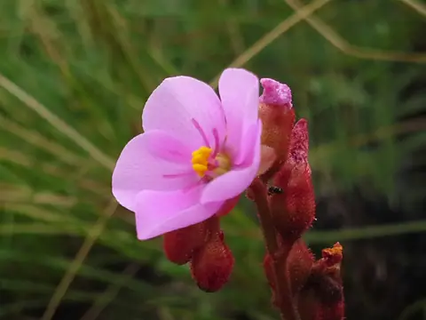
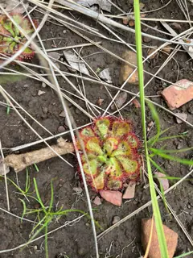
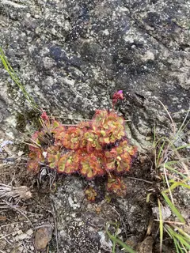

Drosera dielsiana
Diels Sundew



- Genus
- Drosera (sundews), family Droseraceae
- Subgenus
- Drosera
- Section
- Ptycnostigma
Original description
First described in 1956:
Drosera dielsiana Exell & J.R.Laundon, Bol. Soc. Brot. sér. 2, 30: 214. 1956
How well the identifier knows it
Of 13 validation photos of Drosera dielsiana (photos the model never trained on), its top guess was right for 2. It gave a confident answer for 4 of them, and 1 of those were right.
Only 32 training photos: species with fewer than 40 are identified less reliably.
Most often mistaken for
- Drosera natalensis (6 photos)
- Drosera trinervia (2 photos)
- Drosera spatulata (1 photo)
Learn more
- iNaturalist: observations and range map
- Plants of the World Online (Kew): accepted name, distribution and synonyms
- Wikipedia